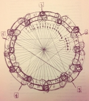

Coltrane's Mystery Music Diagram

Like many music theory minded people, who also are into jazz, I have seen and wondered about John Coltrane's curious circle drawing...
This fascinating, but simple diagram speaks for itself. But why the curious chromatic clusters? Why separate them with a minor 3rd interval? And notice that no cluster is ever repeated. They are all unique all the way around the circle. Cool! And how does this diagram illustrate Coltrane's playing? Hmmmm ü§î
Here is Coltrane's original drawing. (Notice that he messed up at 9 o'clock.)